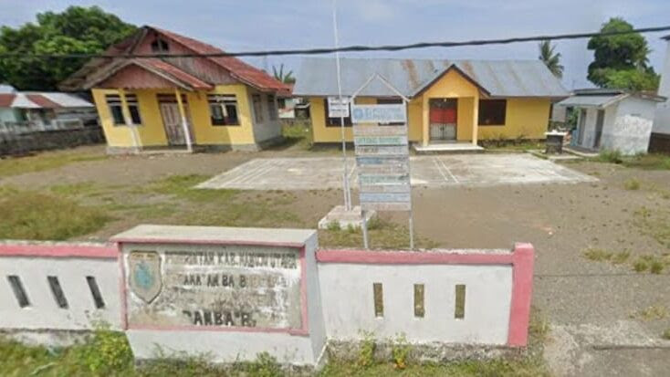

Sejarah Desa Bambaira
Desa Bambaira terletak di bagian Barat Sulawesi pada tahun 1960 pada masa itu pulau sulawesi
terdapat tiga provinsi yakni provinsi Sulawesi Selatan, Sulawesi Tengah dan Sulawesi Utara
pada saat itu pula provinsi Sulawesi Barat diperjuangkan namun pada tahun 1963, pemerintah pusat
hanya menerima pembentukan provinsi Sulawesi Tenggara sedangkan usulan pembentukan provinsi
Sulawesi Barat tidak disetujui oleh pemerintah pusat. Pada tahun 1970 Desa Sarude, Desa
Balabonda, Desa Ietawa, Desa Maponu, Desa Tampaure dan Desa Kalukunangka masih satu induk
desa, yakni Desa Bambaira.
Pada saat itu ibukotanya berada di Ujung Pandang yang sekarang dikenal dengan nama Kota Makassar.

Perjuangan pembentukan Provinsi Sulawesi Barat menemukan momentumnya pada tahun 1999 pasca
gerakan reformasi pembentukan Provinsi baru di Indonesia. Perjuangan panjang pembentukan Provinsi
Sulawesi Barat akhirnya
terwujud melalui upaya rakyat Sulawesi Barat didukung oleh anggota DPR RI melalui Hak Asasi Anggota
DPR RI Tentang UU Pembentukan Daerah Otonomi Baru, tanggal 5 Oktober 2004 provinsi Sulawesi Barat
resmi terbentuk berdasarkan Undang-Undang No. 26 Tahun 2004,
yang sebelumnya terlebih dahulu Kabupaten Mamuju Utara dimekarkan pada tahun 2003 berdasarkan
Undang-Undang No. 07 tahun 2003 dan pada tahun 2017 berubah nama menjadi Kabupaten Pasangkayu
berdasarkan Peraturan Pemerintah Nomor 61 tahun 2017
Pada saat pemekaran Sulawesi Barat dan Kabupaten Mamuju Utara, maka Desa Bambaira pun dimekarkan
menjadi beberapa desa dan Desa Bambaira pun menjadi kota induk dari Kecamatan Bambaira Kabupaten
Pasangkayu. Adapun Desa Bambaira memiliki versi
menurut masyarakat, cikal bakal penamaan Desa Bambaira berdasarkan sejarah desa itu sendiri. Desa
Bambaira berdiri pada tahun 1970 berkat prakarsa bapak Andi Rumana dan masyarakat setempat.
Sebelum terbentuk, desa ini awalnya bernama Tanjung Taipa karena di tepi laut terdapat pohon mangga
yang berdiri tepat di atas tanjung. Kemudian ada sekelompok suku Kaili di daerah desa Bambaira
tepatnya di Dusun Sibala, waktu itu belum dinamai Dusun Sibala dan yang masuk ke pemukiman
tersebut untuk tinggal bercocok tanam dan pada saat itu pohon mangga yang hidup di tanjung tersebut
tidak ada lagi. Jadi, masyarakat setempat sepakat untuk mengganti nama Desa Tanjung Taipa menjadi
Desa Bambaira. Bambaira berasal dari bahasa kaili yang terdiri dari dua kata,
Bamba artinya pintu dan Ira/Lawira artinya daun keladin, yang berarti pintu sungai
yang disekitarnya banyak tumbuhan daun keladin karena di pinggir kamput tersebut terdapat sungai.
Daftar nama-nama kepala desa Bambaira yang pernah menjabat sebagai berikut:
| NO |
NAMA |
JABATAN |
TAHUN |
KET |
| 1 |
Muh. Amin |
Kepala Desa |
|
Desa Defenitif |
| 2 |
Abyar Banon |
Kepala Desa |
|
Desa Defenitif |
| 3 |
Andi Subair |
Kepala Desa |
|
Desa Defenitif |
| 4 |
Sudding Tambung |
Kepala Desa |
|
Desa Defenitif |
| 5 |
Amirudin |
Kepala Desa |
|
Desa Defenitif |
| 6 |
H. Djafar |
Kepala Desa |
|
Desa Defenitif |
| 7 |
Baharullah |
Kepala Desa |
|
PJ Kepala Desa |
| 8 |
Saparuddin |
Kepala Desa |
|
PJ Kepala Desa |
| 9 |
Arsid |
Kepala Desa |
|
Desa Defenitif |
| 10 |
H. Safaruddin S.Sos |
Kepala Desa |
2009-2017 |
Desa Defenitif |
| 11 |
Aris |
Kepala Desa |
2018-2019 |
PJ Kepala Desa |
| 12 |
Rahmatullah |
Kepala Desa |
2021-2026 |
Desa Defenitif |
Berdasarkan data profil desa, jumlah penduduk desa Bambaira adalah 3.002 juwa berdasarkan penjelasan
berikut:
- Jumlah Kepala Keluarga = 744 KK
- Jumlah Jenis Kelamin Laki-laki = 1.446 Jiwa
- Jumlah Jenis Kelamin Perempuan = 1.329 Jiwa
Desa Bambaira merupakan salah satu desa dalam wilayah Kecamatan Bambaira Kabupaten Pasangkayu
Provinsi Sulawesi Barat yang terletak
di bagian barat Kecamata Bambaira. Secara administratif Desa Bambaira memiliki batas sebagai
berikut:
- Sebelah utara berbatasan dengan Desa Tampaura
- Sebelah timur berbatasan dengan Provinsi Sulawesi Tengah
- Sebelah Selatan berbatasan dengan Desa Kasoloang
- Sebelah barat berbatasan dengan Selat Makassar
Jarak Antar Ibu Kota
| Jarak (KM) |
Desa Bambaira |
Ibu Kota Kecamatan |
Ibu Kota Kabupaten |
Provinsi |
| Desa Bambaira |
0 KM |
|
|
|
| Ibu Kota Kec |
|
8 KM |
|
|
| Ibu Kota Kab |
|
|
40 KM |
|
| Ibu Kota Prov |
|
|
|
311 KM |
Luas wilayah Desa Bambaira adalah 12,21 km2 yang terdiri dari 6 dusun, kondisi wilayah
berdasarkan pemetaan sebagai berikut:
- Sebelah barat daerah daratan rendah tempat bermukimnya penduduk Desa Bambaira
- Sebelah timur tempat hunian, perkebunan kelapa dalam, kelapa sawit dan area pertanian lainnya
serta hunian masyarakat Desa Bambaira
- Sebelah utara tempat bermukim masyarakat dan tempat pasar desa
- Sebeleah selatan tempat hunian, perkebunan kelapa sawit dan kantor Kecamatan Bambaira
Pembagian Wilayah Desa
Wilayah Desa Bambaira dibagi menjadi 6 (enam) dusun. Setiap dusun dipimpin oleh kepala
kewilayahan/dusun sebagai delegasi dari Kepala Desa di dusun tersebut. Pusat Desa Bambaira terletak
di Dusun Bambaira.
Pembagian wilayah Desa Bambaira tersaji dalam tabel berikut:
| NO |
Pembagian Wilayah |
RT |
Ket |
| 1 |
Dusun Todang Jaya |
- |
Dikepalai oleh KUMISI |
| 2 |
Dusun Baruga Baru |
- |
Dikepalai oleh HASANUDDIN |
| 3 |
Dusun Taba |
- |
Dikepalai oleh IVAN |
| 4 |
Dusun Bambaira |
- |
Dikepalai oleh MUH. ILHAM RAJAB |
| 5 |
Dusun Tanjung Ira |
- |
Dikepalai oleh DARUSSALAM |
| 6 |
Dusun Sibala |
- |
Dikepalai oleh ARMIN |
Data Sumber Daya Desa
A. Sumber Daya Alam
Potensi dan sumber daya alam desa Bambaira masih sangat menunjang untuk arah pembagunan desa
bambaira kedepan namun sebagian belum maksimal
bahkan belum tersentuh sama sekali diantaranya wisata alam berupa Goa Ape berkisaran 7 titik
mulut Goa dan danau seluas 45 ha yang terletak
di Dusun Bambaira sebagian di wilayah Dusun Tanjung Ira di Bambaira pun secara geografis
mempunyai pantai sekitar panjang 3 km yang sangat
berpotensi menjadi wisata pantai begitupun laut sebagai sumbar daya alam yang sangat berpontensi
bagi masyarakat nelayan yang ada di sepanjang
pesisir pantai Desa Bambaira. Hutan dan lahan pertanian serta persawahan juga ada di desa
bambaira yang biasa menjadi sumber daya alam yang bisa
dikembangkan untuk arah kebijakan pembangunan serta pemberdayaan Sumbar daya alam lainnya adalah
sungai, tambang batu gunung, sirtu pasir kayu bambu dll.
berikut sumber Daya alam diuraikan dalam tabel sebagai berikut :
| NO |
Uraian Sumber Daya |
Vol |
Satuan |
| 1 |
Pasir Pasang |
100.000 |
M3
|
| 2 |
Tanah Urungan |
100.000 |
M3
|
| 3 |
Pasir Urungan |
100.000 |
M3
|
| 4 |
Sirtu |
100.000 |
M3
|
| 5 |
Lahan Perkebunan dan Pertanian |
400 |
Ha |
| 6 |
Lahan Persawahan |
50 |
Ha |
| 7 |
Hutan (Bambu, Kayu dll) |
10 |
Ha |
| 8 |
Danau |
48 |
Ha |
| 9 |
Goa |
7 |
Titik |
| 10 |
Sungai |
3 |
km |
| 11 |
Batu Gunung |
100.000 |
M3 |
| 12 |
Batu Kali (Sungai) |
100.000 |
M3 |
| 13 |
Pohon Kelapa |
30 |
Ha |
| 14 |
Pohon Sawit |
250 |
Ha |
| 15 |
Pohon Aren/Enau |
5 |
Ha |
B. Sumber Daya Manusia
Berdasarkan data yang dimiliki kantor pemerintahan desa Bambaira mencapai 2791 jiwa dari 706 KK
dengan komposisi jumlah penduduk laki-laki sejumlah 1431 dan penduduk perempuan sejumlah 1360
orang adapun jumlah kepadatan penduduk yang diuraikan dalam tabel sebagai berikut:
| NO |
Nama Dusun |
KK |
JIWA |
JUMLAH |
| LK |
PR |
| 1 |
Bambaira |
103 |
185 |
167 |
532 |
| 2 |
Tanjung Ira |
144 |
249 |
235 |
484 |
| 3 |
Sibala |
105 |
200 |
210 |
410 |
| 4 |
Taba |
147 |
281 |
257 |
538 |
| 5 |
Baruga Baru |
147 |
318 |
251 |
569 |
| 6 |
Todang Jaya |
98 |
213 |
209 |
422 |
|
Total |
744 |
1446 |
1329 |
2775 |
C. Agama
Dari segi Agama Desa Bambaira penduduknya mayoritas muslim dengan jumlah mencapai 2996. Kemudian
ada juga non muslim seperti Agama Hindu berjumlah 6 Orang dari 1 KK, sedangkan Agama Kristen,
Katholik Budha dan Konghucu tidak ada.
| NO |
AGAMA |
Laki-Laki |
Perempuan |
Jumlah |
| 1 |
Islam |
1443 |
1326 |
2769 |
| 2 |
Kristen |
- |
- |
- |
| 3 |
Katholik |
- |
- |
- |
| 4 |
Hindu |
3 |
3 |
6 |
| 5 |
Buddha |
- |
- |
- |
| 6 |
Konghucu |
- |
- |
- |
| - |
Total |
1446 |
1329 |
2775 |
D. Suku
| NO |
Nama/Etnis/Suku |
Jumlah jiwa |
KET |
| 1 |
Suku Bugis |
1398 |
- |
| 2 |
Suku Mandar |
1027 |
- |
| 3 |
Suku Kaili |
278 |
- |
| 4 |
Suku Jawa |
27 |
- |
Diliat data diatas suku bugis terlihat lebih banyak bila dibandingkan dengan yang lain, hal ini
dikarenakan suku bugis yang pertama yang mengawali bertempat/domisilih dan banyaknya para
pendatang/perantau dari kabupaten sidrap, soppeng, pare-pare, selain itu ada juga beberapa suku
lain yang tinggal atau menetap di Desa Bambaira diantaranya suku Mandar, kaili dan jawa serta
suku lainya.
E. Pendidikan
Sebagian besar masyarakat Desa Bambaira tamat SD – SMA sederajat namun ada juga beberapa mulai
dari D1 – S1 dan S2 walaupun begitu, setidaknya sebagian masyarakat sudah pernah merasakan
pendidikan dasar sehingga dapat membantu mereka untuk bekerja atau mengembangkan keterampilannya
untuk mengembangkan keterampilan dalam pekerjaannya.
| NO |
Tingkat Pendidikan |
Jumlah |
Keterangan |
| 1 |
Tidak tamat SD/tidak sekolah |
393 |
|
| 2 |
Tamat SD/sederajat |
571 |
|
| 3 |
Tamat SMP/sederajat |
394 |
|
| 4 |
Tamat SMA/sederajat |
271 |
|
| 5 |
Alumni S1 |
82 |
|
| 6 |
Alumni S2 |
2 |
|